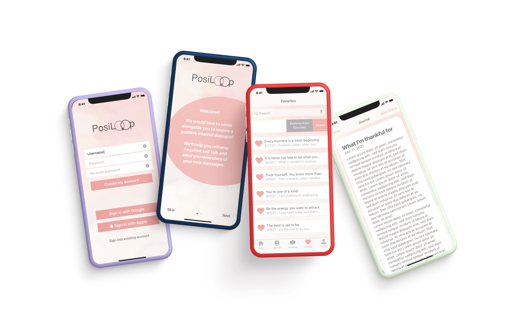

UX Skills
User Research
Working with UX tools to understand users needs and their motivations
User Interface Design
Design and function through testing and prototypes
Web Development
Webpages and interaction prototypes
About me context on chosen directions and goals from projects.
Working with UX tools to understand users needs and their motivations
Design and function through testing and prototypes
Webpages and interaction prototypes
Journaling and record keeping application for generating positive self talk.
Reuse Nonprofit and artist incubator